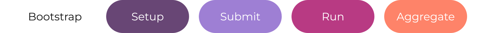

Fully reproducible, from one sourced file
From bootstrap to analysis, a complete HPC experiment is an ordinary Bash script — and it all begins by sourcing a single file.

source knit.sh
knit_set_program_description "A tiny quickstart experiment."Plain Bash in, a full CLI out
Register a function and Knit gives you --help, typed
parameters, validation, and logging — for free.
@command "say" "Repeat a message."
@with_required "message:string" "The message to repeat."
_say() {
local message
message="$(knit_get_parameter "message" "$@")"
echo "User said '${message}'"
}
@done./exp.sh say --message "good morning"
User said 'good morning'
Every run is recorded
Add knit_with_table and each invocation — its parameters,
outputs, and timing — becomes a row you can read straight back with SQL.
@command "add" "Add two integers and record the run."
@with_required "x:integer" "First value."
@with_required "y:integer" "Second value."
@with_output "total:integer" "0" "x + y."
@with_table
_add() {
local x y
x="$(knit_get_parameter "x" "$@")"
y="$(knit_get_parameter "y" "$@")"
knit_output "total" "$((x + y))"
printf 'total=%s\n' "$((x + y))"
}
@done./exp.sh add --x 2 --y 3 total=5 ./exp.sh query sql --format column --header --exec 'SELECT x, y, total FROM "add"' x y total - - ----- 2 3 5
Laptop today, cluster tomorrow — same script
Knit detects the scheduler and MPI launcher, so the very same
knit run maps to mpirun on your laptop and to
the site launcher (e.g., srun) on a
cluster. The machine changes, the code doesn't.
# On a laptop: 4 ranks via the local MPI launcher ./exp.sh run --procs 4 -- render # On a cluster: identical command, Knit uses the scheduler's launcher ./exp.sh run --procs 512 --procs-per-node 64 -- render
How each result came to be, as a graph
Knit records the relationships between everything — which submission called which job, which job launched which run — so you can query the whole lineage with Cypher, making complex provenance queries simple.
./exp.sh query graph --format column --header \
--exec "MATCH (job:julia)-[:call]->(:run)-[:call]->(img:render)
RETURN job.id, img.c_re, img.inside"
job.id img.c_re img.inside
------------------------------------ -------- ----------
018f2a1b-9c3d-7e4f-8a1b-2c3d4e5f6a7b -0.123 69456
018f6e5f-3a7b-7c8d-2e5f-6a7b8c9daebf -0.7 119960
018f7f6a-4b8c-7d9e-3f6a-7b8c9daebfc0 -1.25 34164
Talk to your script
Point Knit at any OpenAI-compatible model and ask about your experiment in plain English. Answers are grounded in this experiment's recorded runs. Now you can talk to your script!
./exp.sh ai ask --question "which Julia constant produced the most interior points?"
The render with c_re=-0.7, c_im=0.0 (the "San Marco" constant) had the most
interior points (inside=119960), ahead of c_re=-0.391 (78043) and c_re=-1.0
(74800).